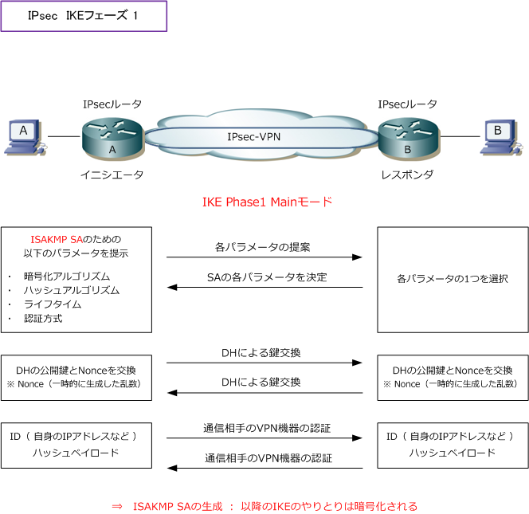
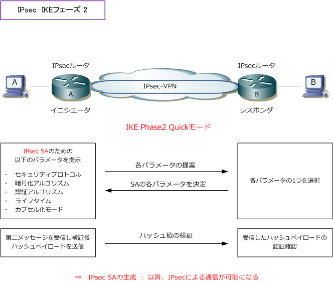

IPsec - IKE : Phase1 & Phase2
IKE フェーズ 1
IKEフェーズ1では、ネゴシエーションによりISAKMP SAに必要な以下のパラメータを決定します。
| IKE Phase1 のパラメータ | 説明 |
|---|---|
| 暗号化アルゴリズム | ISAKMPメッセージのための暗号化（ DES or 3DES or AES ） |
| ハッシュアルゴリズム | ISAKMPメッセージのための認証と鍵計算に使用するハッシュ方式（ MD5 or SHA-1 ） |
| ライフタイム | ISAKMP SAのライフタイムとライフタイプ（単位：秒など） |
| 認証方式 | IPsecのピアをはる相手の機器の認証方式。4つの方式がある。 Pre-Shared Key、デジタル署名、公開鍵暗号、改良型公開鍵暗号 |
| DHグループ | 鍵計算のためのパラメータ。DHグループ1 or 2 or 5。鍵計算に使用する値は 暗号化されていないがDiffie-Hellmanのアルゴリズムを使用しているため問題ない |
IKEフェーズ1では、ISAKMPメッセージの交換手順としてMainモードとAggressiveモードがあります。
| IKE Phase 1 のモード | 説明 |
|---|---|
| Mainモード | 6つのISAKMPメッセージの送受信でフェーズ1を完了させる。 第1,2メッセージ（ ISAKMP SAのパラメータのネゴシエーション ） 第3,4メッセージ（ 鍵計算用のパラメータの交換と鍵計算 ） 第5,6メッセージ（ IPsecのピアをはる通信相手（機器）の認証 ） |
| Aggressiveモード | 3つのISAKMPメッセージの送受信でフェーズ1を完了させる。Mainモードよりも 早くフェーズ1を完了することが可能であるが、SAのネゴシエーションで制限が 発生する。しかしこれにより、Mainモードの制限が緩和されることにもなる。 |
IKEフェーズ1では、通信相手（IPsec機器）との認証を行うために4つの認証方式があります。
| IKE Phase 1の相手認証方式 | 説明 |
|---|---|
| Pre-Shared Key | IPsecのピアをはる両方の機器であらかじめ同じ鍵（事前共有鍵）を共有 しておく方法。この方式では、予め両方の機器で同じ文字列の鍵を設定して おく必要がある。この事前共有鍵はパスフレーズとも呼ばれる。 |
| デジタル署名 | DSA と RSA の2つの方式があるが、実際に使用されているのは RSA による デジタル署名方式のみ。RSAではハッシュ関数によりデータからダイジェスト を生成して、それを自身の秘密鍵を使用して暗号化したデジタル署名をもとの データと一緒に送信する。受信側は送信側の公開鍵で復号してダイジェストを 取り出し、自身で生成したダイジェストと比較することで改ざんを確認できる。 |
| 公開鍵暗号 | もとのデータを暗号化するためには、データの送信者は受信者が公開して いる公開鍵を使用する。一方、受信者は暗号化されたデータを受信者だけが 持つ秘密鍵を使用して復号化する。これを利用して通信相手の機器を認証する。 |
| 改良型公開鍵暗号 | 公開鍵暗号を改良した方式であり、公開鍵暗号よりも計算量が少ない方式。 |

IKE フェーズ 2
IKE フェーズ2では、ネゴシエーションによりIPsec SAに必要な以下のパラメータを決定します。
| IKE Phase 2 のパラメータ | 説明 |
|---|---|
| セキュリティプロトコル | IPsecで使用するセキュリティプロトコル（ AH or ESP ） |
| 暗号化アルゴリズム | IPsecで使用する暗号化方式（ DES or 3DES or AES ） |
| 認証アルゴリズム | IPsecで使用する認証方式（ HMAC-MD5 or HMAC-SHA1 ） |
| ライフタイム | IPsec SAのライフタイムとライフタイプ（ 単位：秒など ） |
| カプセル化モード | トンネルモード or トランスポートモード |
| DHグループ | フェーズ2では必須ではない。共通鍵の生成に際してよりセキュアに 行うためにPFSと呼ばれる機能を使用する場合のみフェーズ1と同様に ネゴシエーションによりDHグループを決定する必要がある。 |
IKE フェーズ2におけるやりとりは、IKE フェーズ1で確立したISAKMP SA上でやりとりされるので、 IKE自体のやりとりが暗号化されます。IKE フェーズ2では、ISAKMPメッセージの交換手順として、 Quickモードのみがある。このモードでは計3回のメッセージの送受信によりIPsec SAを確立します。
